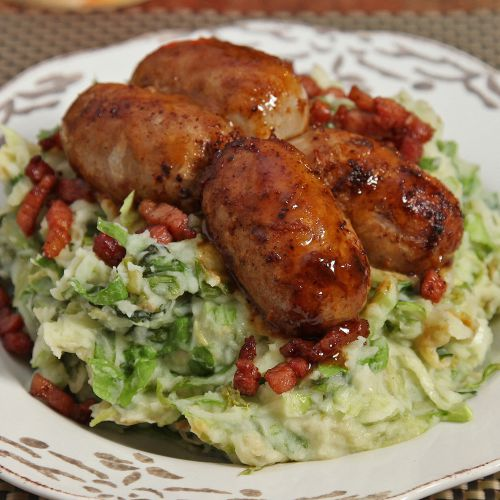

Raw Endive Mash

Description
Ingredients for 2 servings
- 600g Potatoes
>
- 600g Carrots
- 300g Onions, white or yellow
- 2 laurel leaves
- 20g butter
- 40 ml milk
- parsley
- 160g grated Old Gouda
Recipe
- Cut and clean the carrots(slices), the onions(rings) and the potatoes(chunks).
- Boil 1 liter of water in a big pan.
- Add potatoes to the boiling water.
- Add onion to the mix.
- Add carrot to the mix.
- Add the laurel en some salt and pepper.
- Let the mixture boil for about 25 minutes
- Drain the pan
- Mash the mixture with a masher. Don't overdo it, you don't want the mixture to become too smooth.
- Stir the butter and milk throug the mixture and add the grated cheese and parsley.
- Serve with some gravy and a meatball(or anything else really).